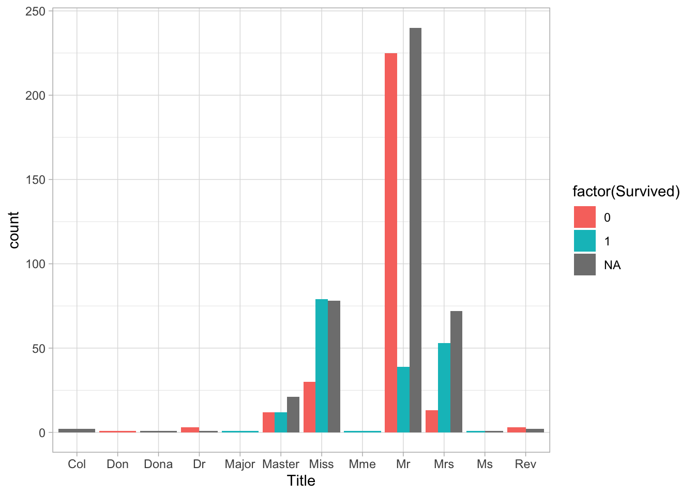
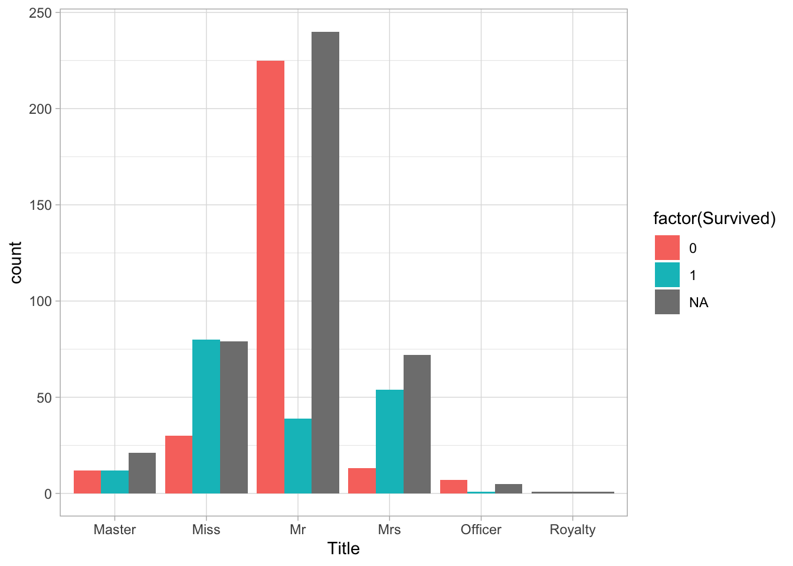
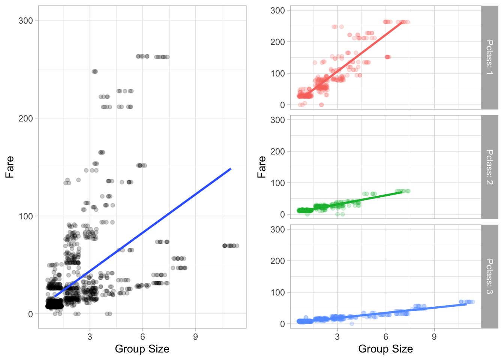

From the evaluation of the variables so far, I have found that survival rates are higher for economically well-off individuals and for women. Thus, it is possible that survival rates can be predicted from name titles. I subtracted the Title from Name by using regular expression.
##
## 0 1
## Capt 1 0
## Col 1 1
## Don 1 0
## Dona 0 0
## Dr 4 3
## Jonkheer 1 0
## Lady 0 1
## Major 1 1
## Master 17 23
## Miss 55 127
## Mlle 0 2
## Mme 0 1
## Mr 436 81
## Mrs 26 99
## Ms 0 1
## Rev 6 0
## Sir 0 1
## the Countess 0 1##
## Capt Col Don Dona Dr Jonkheer Lady Major Master Miss Mlle Mme Mr Mrs
## female 0 0 0 1 1 0 1 0 0 260 2 1 0 197
## male 1 4 1 0 7 1 0 2 61 0 0 0 757 0
##
## Ms Rev Sir the Countess
## female 2 0 0 1
## male 0 8 1 0##
## 0 1
## Capt 1.0000000 0.0000000
## Col 0.5000000 0.5000000
## Don 1.0000000 0.0000000
## Dona
## Dr 0.5714286 0.4285714
## Jonkheer 1.0000000 0.0000000
## Lady 0.0000000 1.0000000
## Major 0.5000000 0.5000000
## Master 0.4250000 0.5750000
## Miss 0.3021978 0.6978022
## Mlle 0.0000000 1.0000000
## Mme 0.0000000 1.0000000
## Mr 0.8433269 0.1566731
## Mrs 0.2080000 0.7920000
## Ms 0.0000000 1.0000000
## Rev 1.0000000 0.0000000
## Sir 0.0000000 1.0000000
## the Countess 0.0000000 1.0000000 There are several few titles. We have summarized and categorized them into groups of six titles.
 It can be seen that the mortality rate is very high for those with the title “Mr.”.
Many part of cabin data was missing. Since assigning missing values would place a very strong presumption, I made it a binary variable with and without data.
##
## 0 1
## 0.7746371 0.2253629We created the per capita fare cost as a variable because it is possible that more affluent people purchase more expensive tickets and have higher survival rates.
 There are correlation between Group size and Pclass. ### 3.1.4 Based on previous studies, it is possible that the larger the family size, the higher the survival rate. Thus, I created a family size variable.
From here, I have addressed the variables with missing values. I know that there were missing values in Age, and Fare_pp_FE. I also know that Embarked has a blank entry.
## var missing missing_prop
## 1 Survived 418 0.3193277311
## 2 Age 263 0.2009167303
## 3 Fare_pp_FE 1 0.0007639419
## 4 PassengerId 0 0.0000000000
## 5 Pclass 0 0.0000000000
## 6 Sex 0 0.0000000000
## 7 SibSp 0 0.0000000000
## 8 Parch 0 0.0000000000
## 9 Embarked 0 0.0000000000
## 10 Test_Data 0 0.0000000000
## 11 Title 0 0.0000000000
## 12 Surname 0 0.0000000000
## 13 Cabin_dat 0 0.0000000000
## 14 Family_size_FE 0 0.0000000000
## 15 Total_group_size_FE 0 0.0000000000## PassengerId Pclass Sex Age SibSp Parch Embarked Test_Data Survived Title
## 153 1044 3 male 60.5 0 0 S 0 NA Mr
## Surname Cabin_dat Fare_pp_FE Family_size_FE Total_group_size_FE
## 153 Storey 0 NA 1 1There was only one missing value. Since there was one missing value, the median value was assigned instead of taking a special imputation method to save time.
I can see that there are two missing calues in the Embarked. Most passengers are classified as “S”. However, they are classified as “C” because their ticket price is high and it is possible that the wealthier passengers are from “C”.
## [1] 480 1248## PassengerId Pclass Sex Age SibSp Parch Embarked Test_Data Survived
## 480 62 1 female 38 0 0 1 1
## 1248 830 1 female 62 0 0 1 1
## Title Surname Cabin_dat Fare_pp_FE Family_size_FE Total_group_size_FE
## 480 Miss Icard 1 40 1 2
## 1248 Mrs Stone 1 40 1 2##
## C Q S
## 272 123 914The missing calues for Age have been found to be about 20% of the total. Therefore, it is reasonable to use the imputation method to deal with missing values. Here, the missing values were assigned by random forest.
## Rows: 1,309
## Columns: 15
## $ PassengerId <int> 892, 893, 894, 895, 896, 897, 898, 899, 900, 901, …
## $ Pclass <ord> Third, Third, Second, Third, Third, Third, Third, …
## $ Sex <fct> male, female, male, male, female, male, female, ma…
## $ Age <dbl> 34.5, 47.0, 62.0, 27.0, 22.0, 14.0, 30.0, 26.0, 18…
## $ SibSp <int> 0, 1, 0, 0, 1, 0, 0, 1, 0, 2, 0, 0, 1, 1, 1, 1, 0,…
## $ Parch <int> 0, 0, 0, 0, 1, 0, 0, 1, 0, 0, 0, 0, 0, 0, 0, 0, 0,…
## $ Embarked <fct> Q, S, Q, S, S, S, Q, S, C, S, S, S, S, S, S, C, Q,…
## $ Test_Data <int> 0, 0, 0, 0, 0, 0, 0, 0, 0, 0, 0, 0, 0, 0, 0, 0, 0,…
## $ Survived <fct> NA, NA, NA, NA, NA, NA, NA, NA, NA, NA, NA, NA, NA…
## $ Title <fct> Mr, Mrs, Mr, Mr, Mrs, Mr, Miss, Mr, Mrs, Mr, Mr, M…
## $ Surname <chr> "Kelly", "Wilkes", "Myles", "Wirz", "Hirvonen", "S…
## $ Cabin_dat <fct> 0, 0, 0, 0, 0, 0, 0, 0, 0, 0, 0, 0, 1, 0, 1, 0, 0,…
## $ Fare_pp_FE <dbl> 7.83, 7.00, 9.69, 8.66, 6.14, 9.22, 7.63, 9.67, 7.…
## $ Family_size_FE <dbl> 1, 2, 1, 1, 3, 1, 1, 3, 1, 3, 1, 1, 2, 2, 2, 2, 1,…
## $ Total_group_size_FE <int> 1, 2, 1, 1, 3, 1, 1, 3, 1, 3, 1, 1, 2, 2, 2, 2, 1,…I used 5-fold cross validation with different mtry values.
## Random Forest
##
## 1046 samples
## 9 predictor
##
## No pre-processing
## Resampling: Cross-Validated (5 fold, repeated 5 times)
## Summary of sample sizes: 837, 837, 837, 836, 837, 837, ...
## Resampling results across tuning parameters:
##
## mtry RMSE Rsquared MAE
## 2 10.51618 0.4684004 8.093269
## 3 10.57352 0.4610362 8.081742
## 4 10.66986 0.4531266 8.133477
##
## RMSE was used to select the optimal model using the smallest value.
## The final value used for the model was mtry = 2.We can see that the RMSE is the smallest value when mtry = 2.Thus, we see that we are predicting with a random forest of mtry=2. Looking at the impact on variable predictions, it is clear that the Title has a significant impact.
## rf variable importance
##
## Overall
## Title 100.000
## Fare_pp_FE 63.544
## Parch 53.242
## Pclass 39.914
## Total_group_size_FE 35.331
## SibSp 26.641
## Sex 6.987
## Cabin_dat 2.805
## Embarked 0.000Using this prediction formula, the missing value of Age is sbstituted. For those with missing age, we put the predicted value, and for those without missing age, we set the original value.’ Master’ and older than 13 years old were set to 13 years old.
Since it is presumed that younger people have a higher survival rate, a variable was set up to define children as those under 15 years of age.
I have divided the full model again into test and training data. The training data is used to create a predictive model to predict the survival of the test data.
Next, I created a prediction model without Cabin_dat and IsChild_FE, which were considered not very useful for prediction in the previous analysis. I have created a predictive model with a random forest as well. We found that Accuracy was highest at mtry=2.
## Random Forest
##
## 891 samples
## 7 predictor
## 2 classes: '0', '1'
##
## No pre-processing
## Resampling: Cross-Validated (5 fold, repeated 5 times)
## Summary of sample sizes: 713, 712, 713, 713, 713, 713, ...
## Resampling results across tuning parameters:
##
## mtry Accuracy Kappa
## 2 0.8332112 0.6372489
## 3 0.8287356 0.6301512
## 4 0.8157295 0.6043597
## 5 0.8090005 0.5916637
## 6 0.8098981 0.5937709
## 7 0.8056284 0.5852647
##
## Accuracy was used to select the optimal model using the largest value.
## The final value used for the model was mtry = 2.## rf variable importance
##
## Importance
## Title 100.00
## Sex 97.40
## Fare_pp_FE 88.22
## Total_group_size_FE 82.45
## Pclass 79.88
## Age_IMP 58.96
## Embarked 0.00## [1] "The maximum accuracy was 0.83321"The results show that model2 has slightly higher Accuracy. I determined this to be the final model.
I was able to obtain high Accuracy with the Random Forest model using Title, Sex, __Fare__ppFE, Total_group_size_FE, Pclass, Age_IMP, Embarked. If I have time in the future, I would like to create a support vector machine and XGboost model, which I plan to study in the spring semester or later.